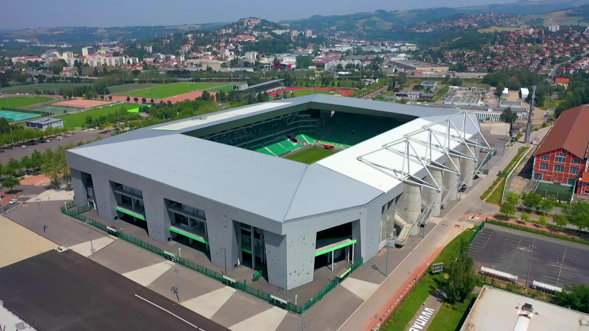
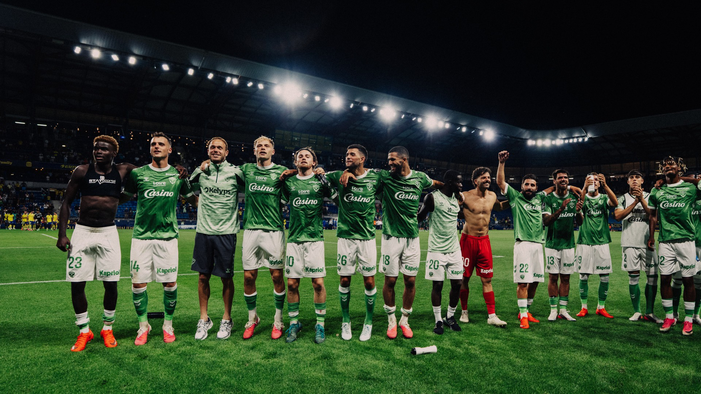
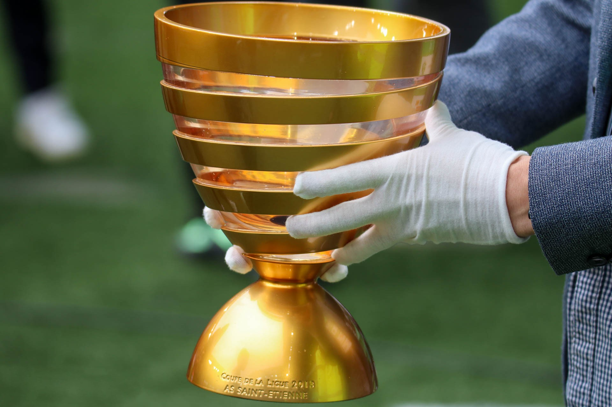

Le Peuple Vert est le cœur battant du club. Les supporters, fidèles et passionnés, apportent une atmosphère unique dans le stade et incarnent l’identité populaire et combative de l’ASSE - Site officiel.

L’AS Saint-Étienne, fondée en 1933, est bien plus qu’un simple club de football : c’est une légende du sport français. Avec son maillot vert iconique, son histoire riche en exploits et son stade mythique Geoffroy-Guichard, l’ASSE - Site officiel fait vibrer des générations de supporters.

Le Peuple Vert est le cœur battant du club. Les supporters, fidèles et passionnés, apportent une atmosphère unique dans le stade et incarnent l’identité populaire et combative de l’ASSE - Site officiel.
Club le plus titré du championnat de France avec ses 10 titres nationaux, Saint-Étienne a marqué l’histoire grâce à des joueurs emblématiques et des épopées européennes inoubliables.

Le palmarès du club témoigne de sa grandeur. La Coupe de la Ligue et les nombreux trophées nationaux sont la preuve de la constance et de l’excellence de l’ASSE - Site officiel à travers l’histoire.

Sur ce site, vous pouvez retrouver toutes les informations importantes sur le club. Découvrez l’effectif complet et apprenez à connaître nos joueurs, revivez les grands moments du palmarès, explorez les maillots historiques et actuels, suivez les prochains matchs, plongez dans l’histoire du club et de ses légendes, et découvrez le stade Geoffroy-Guichard à travers des images et anecdotes.